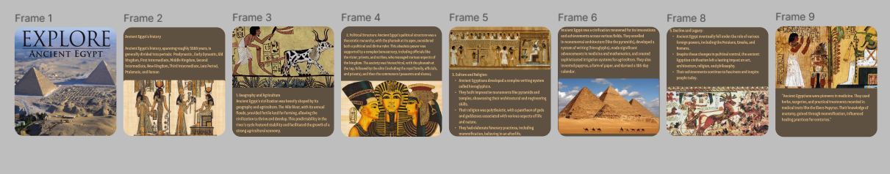
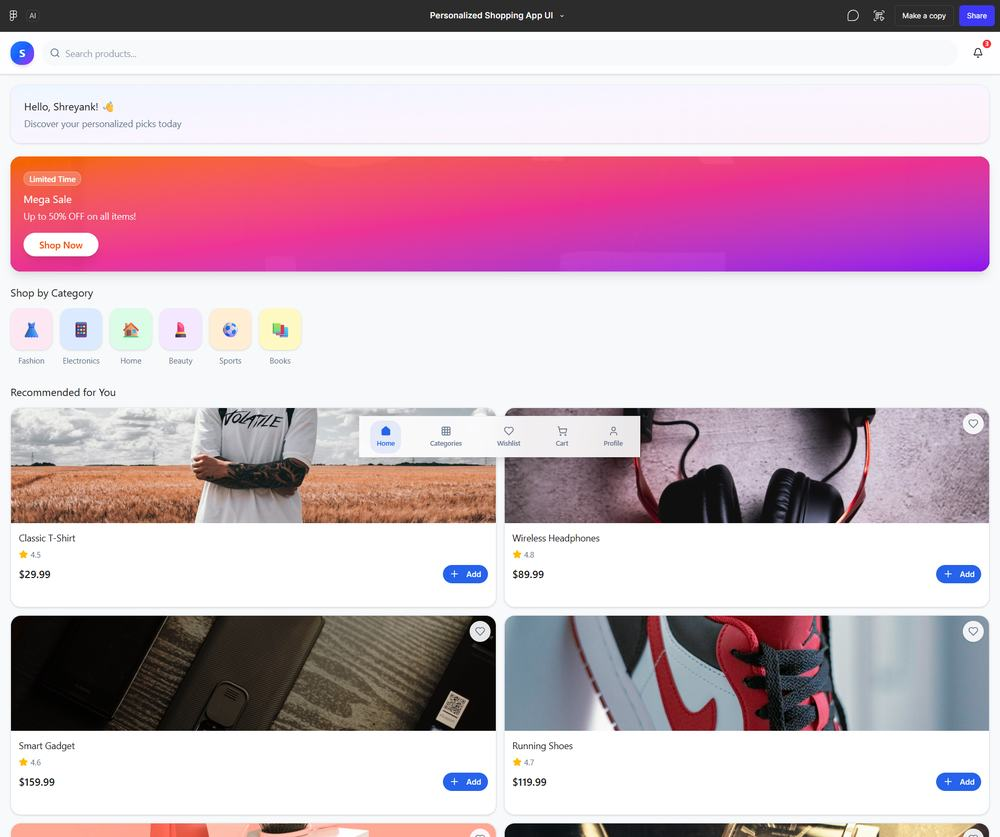
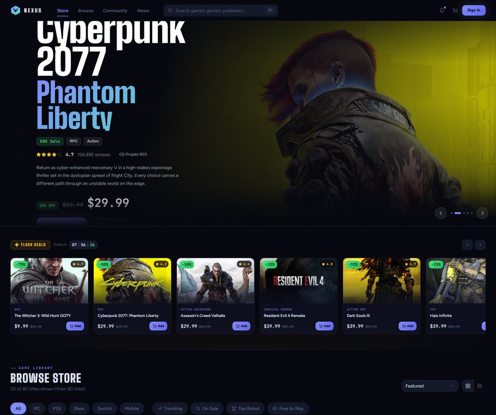
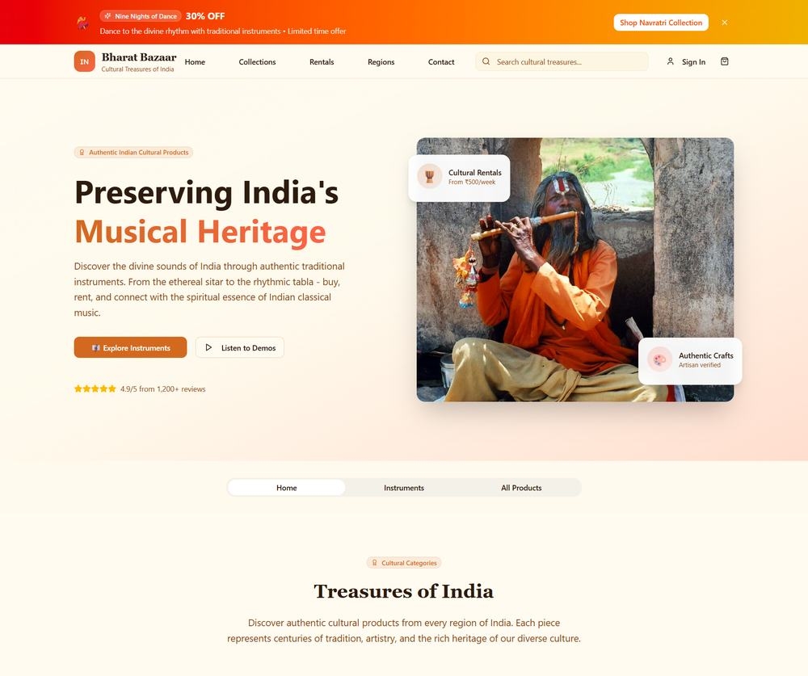
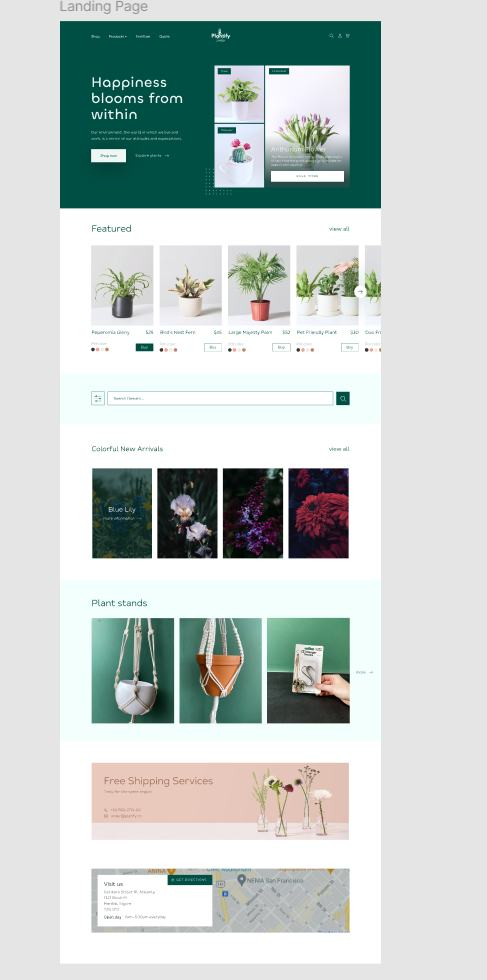

I'm a CS & Design student who builds real-time web apps — the backend and the interface on top of it, usually with a small team moving fast. Most of what's below started as a rough Figma sketch and ended up deployed.
Third-year Computer Science and Design student at Sardar Vallabhbhai Patel Institute of Technology — a course that forces you to hold two disciplines at once instead of picking one. I like projects where the hard part isn't just "does it work" but "does it make sense to someone using it under pressure": a volunteer logging a campus complaint, a farmer checking tomorrow's weather, someone learning sign language through a webcam.
Most of my stack runs through React and Firebase, with Python on the side for anything closer to data or vision. Figma is where things start.
A few things I've shipped, prototyped, or am still happily stuck debugging.
Visual and layout work, separate from shipped code.


Prompted and iterated in Figma Make — mobile-first e-commerce UI exploration.

Dark-themed e-commerce homepage concept, AI-generated from a prompt.

Cultural e-commerce concept — traditional Indian instruments and crafts, AI-generated.

Edited from a Figma Community template — practicing layout and visual hierarchy.
Looking for internship and placement opportunities where I can work across the stack — building the system and the interface on top of it. Reach out directly, no forms.